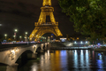
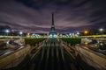

Multimédia
Fotografias
 Vídeo
Poema
Paris, Cidade Luz
Nos becos antigos, onde o tempo repousa,
Paris suspira, entre sonho e prosa.
Seus jardins sussurram segredos ao vento,
A Torre vigia, num doce alento.
No Sena, as águas dançam com o luar,
Refletem histórias, para quem sabe olhar.
Sob suas pontes, amores florescem,
E corações, para sempre, se tecem.
Ó Paris, cidade de encantos mil,
És eterna, um poema sutil.